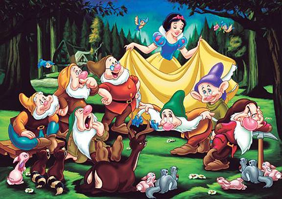

Snow white part 4
The seven dwarfs:
The cottage:
Little snow-white was so hungry and thirsty that she ate some vegetables and bread from
each plate and drank a drop of wine out of each mug, for she did not wish to take all from one
only.
Then, as she was so tired, she laid herself down on one of the little beds, but none of
them suited her, one was too long, another too short, but at last she found that the seventh
one was right, and so she remained in it, said a prayer and went to sleep.
The dwarfs:
When it was quite dark the owners of the cottage came back.
They were seven dwarfs1 who
dug and delved in the mountains for ore.
They lit their seven candles, and as it was now light
within the cottage they saw that someone had been there, for everything was not in the same
order in which they had left it.
1. The first said, “who has been sitting on my chair.”
2. The second, “who has been eating off my plate.”
3. The third, “who has been taking some of my bread.”
4. The fourth, “who has been eating my vegetables.”
5. The fifth, “who has been using my fork.”
6. The sixth, “who has been cutting with my knife.”
7. The seventh, “who has been drinking out of my mug.”
Then the first looked round and saw that there was a little hollow on his bed, and he said,
who has been getting into my bed.
The others came up and each called out, somebody hasbeen lying in my bed too.
But the seventh when he looked at his bed saw little snow-white,
who was lying asleep therein.
And he called the others, who came running up, and they cried
out with astonishment, and brought their seven little candles and let the light fall on little
snow-white.
Oh, heavens, oh, heavens, cried they, what a lovely child.
And they were so glad
that they did not wake her up, but let her sleep on in the bed.
And the seventh dwarf slept
with his companions, one hour with each, and so passed the night.
The encounter:
When it was morning little snow-white awoke, and was frightened when she saw the seven
dwarfs.
But they were friendly and asked her what her name was. My name is snow-white,
she answered. How have you come to our house, said the dwarfs.
Then she told them that
her step-mother had wished to have her killed, but that the huntsman had spared her life,
and that she had run for the whole day, until at last she had found their dwelling.
THANK YOU
